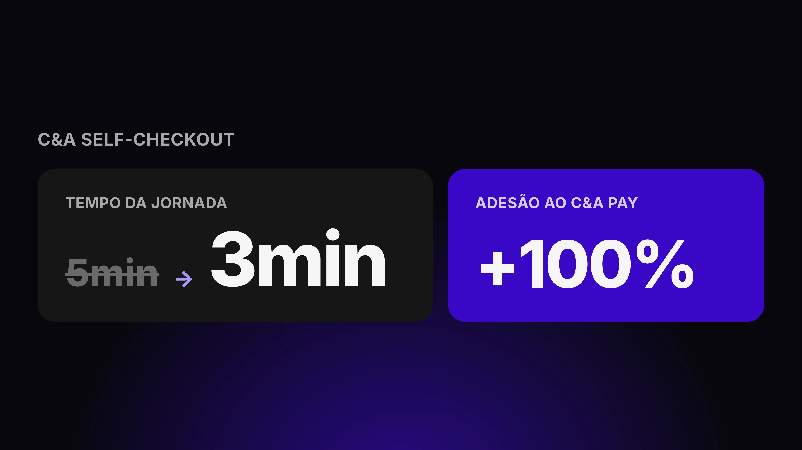
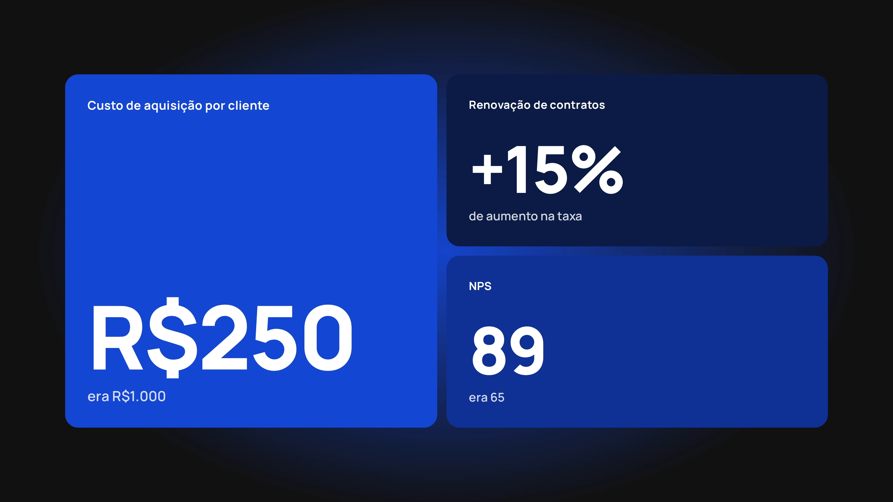
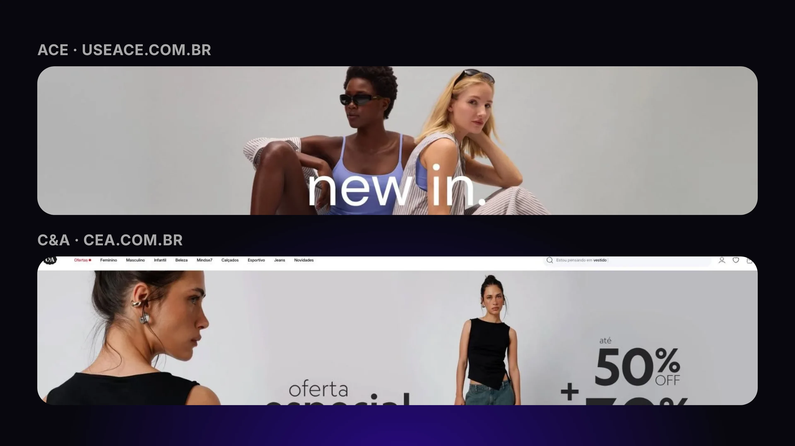
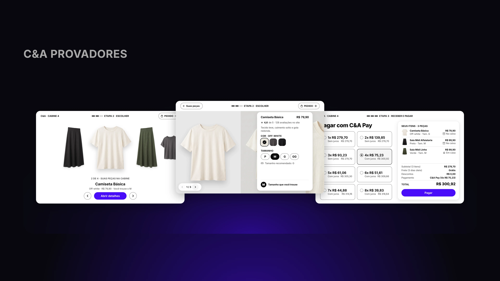

Estruturo times, Design Systems e processos de design com IA para que o time entregue mais rápido, sem perder a qualidade.
C&A — Self-Checkout
O Self-Checkout da C&A precisava ficar mais rápido e, ao mesmo tempo, vender mais crédito — duas metas que se contradizem dentro da mesma tela. Em 4 semanas redesenhei a jornada para resolver essa contradição, reduzindo o tempo de compra de 5min para 3min e dobrando a adesão ao C&A Pay no canal.
Ler o case →
COSTDRIVERS
A COSTDRIVERS, plataforma de indicadores econômicos usada há 20 anos por grandes compradores corporativos, crescia apoiada inteiramente no time comercial: cada conta nova exigia um vendedor guiando a implantação. Criei um fluxo de onboarding self-service que derrubou o custo de aquisição de R$1.000 para R$250, com a taxa de renovação de contratos subindo 15% e o NPS indo de 65 para 89 pontos.
Ler o case →
C&A — ACE
Quando a C&A desvinculou o ACE para competir no mercado premium de athleisure, o site e o app herdados de um portfólio generalista deixaram de fazer sentido para a nova marca. Em 4 semanas e sem dado histórico algum, estabeleci a fundação estratégica da experiência digital que orientou a agência contratada — um trabalho aprovado por todas as diretorias e que chegou ao ar em 3 meses.
Ler o case →
C&A — Provadores
Provar uma roupa na loja costuma terminar em duas esperas: a busca por outro tamanho e a fila do caixa. Desenhei o totem que resolveu a primeira na Energia C&A, no Shopping Center Norte, e depois evoluí o projeto para responder a ambições de negócio, levando o pagamento para dentro da cabine. Com ajuda de IA, essa evolução ficou pronta em 3 dias, contra 3 semanas do projeto original.
Ler o case →
Empresas atendidas
- Visa
- Credsystem
- Vivo
- Claro
- Alelo
- Edenred
- Bioritmo
- ViaVarejo
- Try Consultoria
- Tok&Stok
- Shell
- Estácio
- Cielo
- Smartfit
Sobre
André Tokunaga, Coordenador de UX na C&A Brasil
Product Designer com 10 anos de mercado, hoje à frente da coordenação de UX da C&A Brasil. Construo produtos na interseção de design, pesquisa e negócio, com experiência recorrente estruturando Design Systems e times de design do zero. Atuei em varejo omnichannel, fintech, educação e B2B, sempre orientado por pesquisa e por impacto mensurável.
Como trabalho
Na interface, o que mais me interessa é resolver duas metas que se contradizem dentro da mesma tela. No Self-Checkout, o tempo de compra caiu de 5min para 3min e a adesão ao C&A Pay no canal dobrou; no Provadores, levei o pagamento para dentro da cabine.
Em Design System, lidero o DesignOps da C&A, com um processo baseado em artefatos e um Design System para o time todo e para os parceiros. Na Primum, cliente atendido pela Rizoma, o destaque foi um Design System comum a 5 marcas da holding.
Uso IA dentro do processo de design. No Provadores, o redesign assistido por IA ficou pronto em 3 dias, contra 3 semanas da primeira versão, embora as duas medidas não sejam equivalentes. Na Primum, a IA generativa entrou em fluxos de aprendizagem.
Liderança de pessoas e de prática
Na C&A, além do DesignOps, lidero o Chapter de UX Research. Na Primum, liderei diretamente 12 pessoas, entre desenvolvimento e design.
Trajetória
A Rizoma Labs é o meu estúdio. Por ele atendi a Primum e a COSTDRIVERS, em contrato PJ, cobrindo o ciclo completo de produto, pesquisa, UI e implementação.